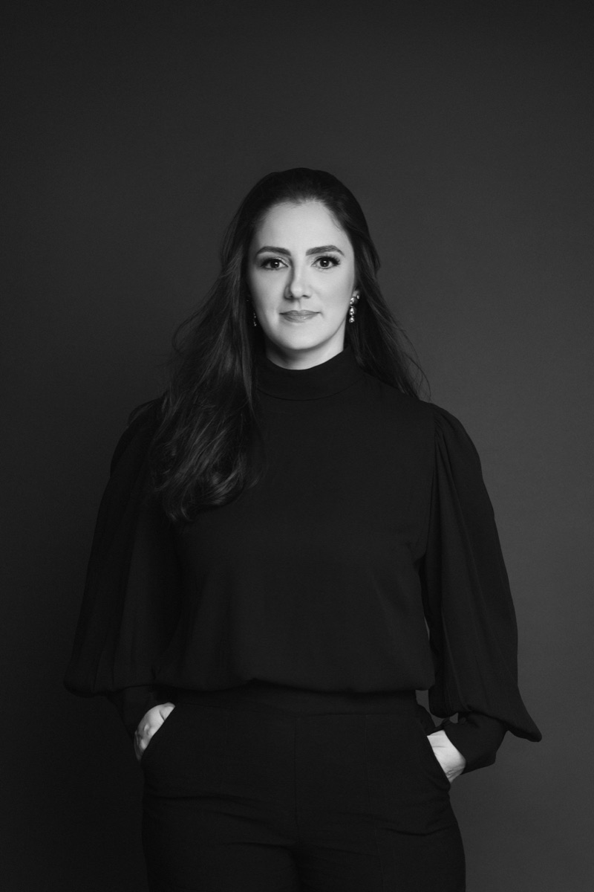
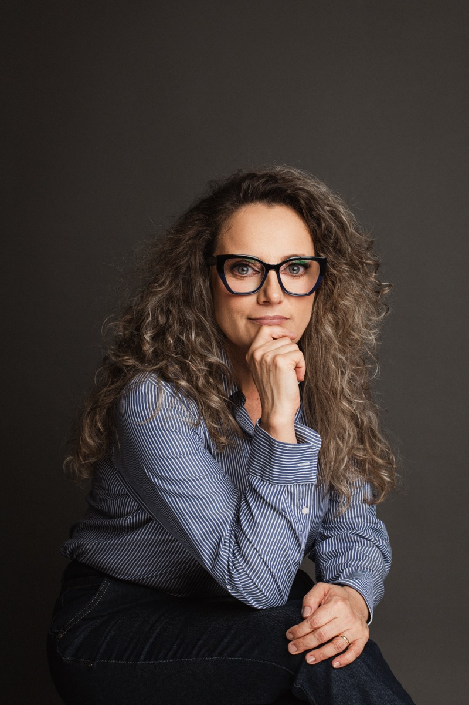

Sobre o escritório
O Escritório
Estrutura enxuta, atuação concentrada e discrição como método — o que sustenta a condução de cada caso.
Primeiro contato sigiloso, sem custo e sem compromisso.

- 15+anos de atuação
- 1.500+clientes atendidos
- 5,0★no Google · 18 avaliações
- BrasilCuiabá-MT e atendimento online
Como chegamos aqui
Estrutura enxuta, por decisão
A escolha por manter um escritório de estrutura enxuta é deliberada e decorre da mesma lógica. Poucos casos simultâneos permitem que cada cliente trate diretamente com a advogada que conduz sua demanda — do primeiro contato à decisão final —, sem camadas de atendimento, sem que o histórico precise ser recontado a cada conversa e sem que informações sensíveis circulem por mais pessoas do que o estritamente necessário. É um modelo que impõe um limite claro de volume, e esse limite é parte da proposta.
Daí vem a segunda marca da atuação do escritório: a discrição como método, e não como cortesia. Em um mercado onde a informação circula rápido, saber que um executivo acionou judicialmente o antigo empregador pode custar mais caro do que a própria verba discutida. Por isso, cada caso é avaliado primeiro pela pergunta que raramente aparece nos manuais — qual caminho resolve a questão com o menor grau de exposição possível? Em uma parcela relevante das situações, a resposta é a negociação direta, conduzida antes que exista qualquer registro público.
O escritório tem sede em Cuiabá-MT, no Edifício Copa Executive Center, onde ocorre o atendimento presencial. A atuação, porém, é nacional: a maior parte dos clientes é atendida por videoconferência, em qualquer estado do país. Esse formato não nasceu de conveniência — nasceu do próprio perfil do público. Executivos com agenda comprometida e profissionais que preferem não ser vistos entrando em um escritório de advocacia na cidade onde trabalham encontram no atendimento remoto a combinação de flexibilidade e reserva que a situação exige. Reuniões fora do horário comercial são agendadas com regularidade, pela mesma razão.
- Poucos casos simultâneos, por limite deliberado de volume
- Interlocução direta com a advogada que conduz o caso
- Negociação reservada avaliada antes de qualquer via judicial
- Sede em Cuiabá-MT e atendimento por videoconferência em todo o Brasil
- Reuniões fora do horário comercial, mediante agendamento

+15
anos de
experiência
Quem somos
As sócias do escritório
O escritório é conduzido por duas sócias fundadoras, com trajetórias complementares no Direito.
-

Dra. Kewri Rebeschini de Lima
Sócia e proprietária · OAB/MT 15.911
Advogada militante nas lides trabalhistas e empresariais em todo o Brasil, sócia e proprietária do escritório Rebeschini Advocacia. Foi professora de Direito e Processo do Trabalho no curso de Direito da Universidade de Várzea Grande (UNIVAG) e professora de cursinhos preparatórios para concursos públicos e para o Exame da OAB, como Complexo de Ensino Renato Saraiva (CERS Cuiabá/MT), LAC Concursos, Projeto OABONLINE e TrinoOAB. Palestrante, ministra cursos de práticas trabalhistas virtuais via Instagram @kewrirebeschini. É especialista em Direito e Processo do Trabalho pela Faculdade de Direito Damásio de Jesus.
-

Dra. Valquiria Ap. Rebeschini Lima
Sócia e proprietária
Advogada especialista em Direito Empresarial, Administrativo, Eleitoral e Previdenciário, sócia e proprietária do escritório Rebeschini Advocacia. Foi advogada da Coligação Majoritária nas eleições municipais de Várzea Grande/MT de 2008 e de 2012. Procuradora Adjunta Chefe da Procuradoria Judicial do Município de Várzea Grande/MT (2013) e da Procuradoria de Licitação e Contratos (2014). Chefe do Jurídico da SESP — Secretaria de Segurança Pública do Estado de Mato Grosso (2015 a 2017) e Assessora Jurídica de Conselheiro no TCE — Tribunal de Contas do Estado de Mato Grosso (2018 a 2019).
Impecável no processo
O método em quatro pilares
Quatro princípios organizam a condução de todo caso — do primeiro contato ao encerramento.
-
Reserva desde a primeira palavra
O sigilo profissional não começa quando o contrato de honorários é assinado: alcança a consulta inicial, mesmo que dela não resulte contratação, e alcança inclusive o fato de que a consulta existiu. Nenhuma providência que envolva a empresa — notificação, proposta, protocolo — é adotada sem decisão prévia e expressa do cliente. Na prática, isso significa que é possível entender a própria situação jurídica por completo antes de decidir se algo será feito a respeito dela.
-
Diagnóstico antes de estratégia
Nenhum caminho é recomendado antes que o caso esteja compreendido em detalhe. A análise preliminar examina contrato, aditivos, política de remuneração variável, regulamento interno, convenção coletiva aplicável, holerites e comunicações relevantes — e só então identifica o que é efetivamente discutível, o que é frágil e o que sequer deveria ser levantado. Cenários desfavoráveis são apresentados com a mesma clareza dos favoráveis, porque a decisão é do cliente e decisão bem tomada exige informação completa.
-
Menor exposição possível
Entre dois caminhos de resultado equivalente, escolhe-se sempre o de menor visibilidade. A negociação extrajudicial é examinada como primeira hipótese em todos os casos que a comportam, e a via judicial é adotada quando é a adequada ao objetivo do cliente — não por padrão. Quando o processo é o caminho, a condução observa o mesmo cuidado: pedidos delimitados, sem alegações desnecessárias e sem elementos que ampliem a repercussão do caso além do que a discussão exige.
-
Interlocução direta e contínua
O cliente trata diretamente com a advogada responsável, sem intermediários e sem canais genéricos de atendimento. As atualizações são periódicas e ocorrem também quando não há novidade processual — porque silêncio, para quem tem uma carreira em jogo, é a pior forma de comunicação. Honorários e critérios de reajuste são apresentados por escrito antes do início de qualquer atuação, sem cobranças posteriores não acordadas.

Por que este escritório
O que sustenta a condução de cada caso
-
Sigilo profissional em todas as etapas
O dever de sigilo é observado de forma integral, do primeiro contato à conclusão do caso — inclusive quanto à própria existência da consulta.
-
Atendimento personalizado
Cada caso é conduzido diretamente pela advogada responsável, sem repasse a estruturas de atendimento em massa.
-
Experiência consolidada
Mais de 15 anos e 1.500+ clientes em demandas de alta complexidade envolvendo profissionais de liderança e do setor bancário.
-
Negociação discreta
Sempre que o caso comporta, prioriza-se a via extrajudicial — solução que resolve a questão sem tornar pública a divergência com o empregador.
-
Comunicação direta com a advogada
O cliente trata diretamente com quem conduz o caso, sem intermediários e sem retorno por canais de atendimento genéricos.
-
Disponibilidade compatível com agenda executiva
Reuniões fora do horário comercial, mediante agendamento, presencialmente em Cuiabá-MT ou por videoconferência.
Conhecer o escritório é o passo mais fácil
O passo seguinte é descrever a sua situação. A análise preliminar é conduzida pela própria advogada, em caráter reservado, sem custo e sem compromisso de contratação.
Primeiro contato
A análise preliminar começa por uma conversa reservada
O primeiro contato é sigiloso, sem custo e sem qualquer compromisso.